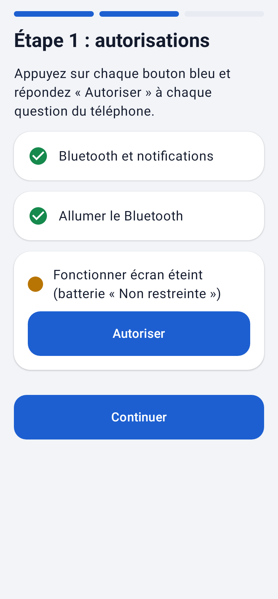
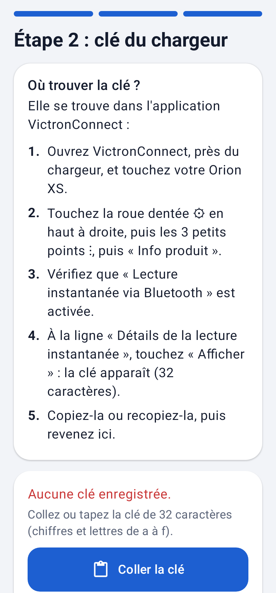
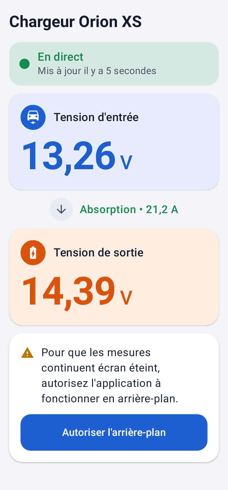
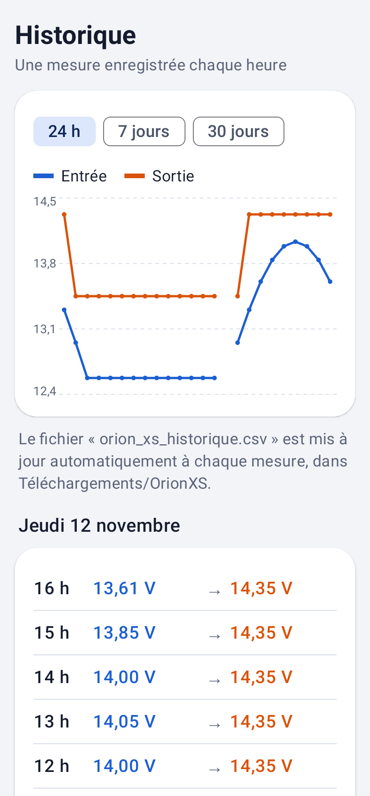
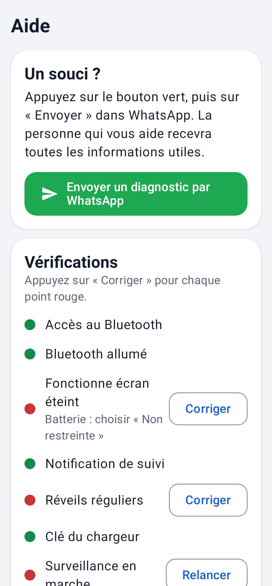

L'application affiche les tensions de votre chargeur Victron et note une mesure chaque heure.

La clé du chargeur se trouve dans l'application VictronConnect :

Ouvrez Orion XS (l'icône bleue avec un éclair).
Vous n'avez rien à faire : l'application fonctionne toute seule, même téléphone en veille, et repart seule si le téléphone redémarre.

Touchez Historique en bas de l'écran : vous voyez une courbe et la liste des mesures, heure par heure.
Les mesures sont aussi enregistrées automatiquement dans le fichier orion_xs_historique.csv, dans Mes fichiers → Téléchargements → OrionXS. Il s'ouvre avec Excel. Vous n'avez rien à faire.

C'est tout : je recevrai les informations pour régler le problème à distance.
Dans la même page, un point rouge signale un réglage à corriger. Touchez Corriger à côté et répondez Autoriser.
